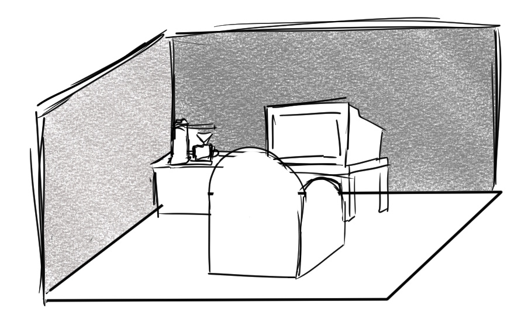
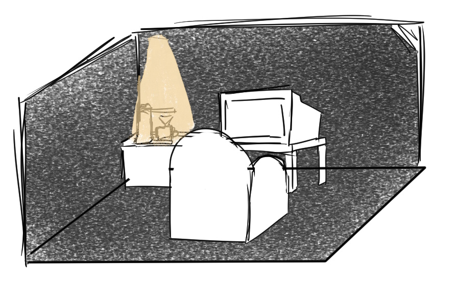
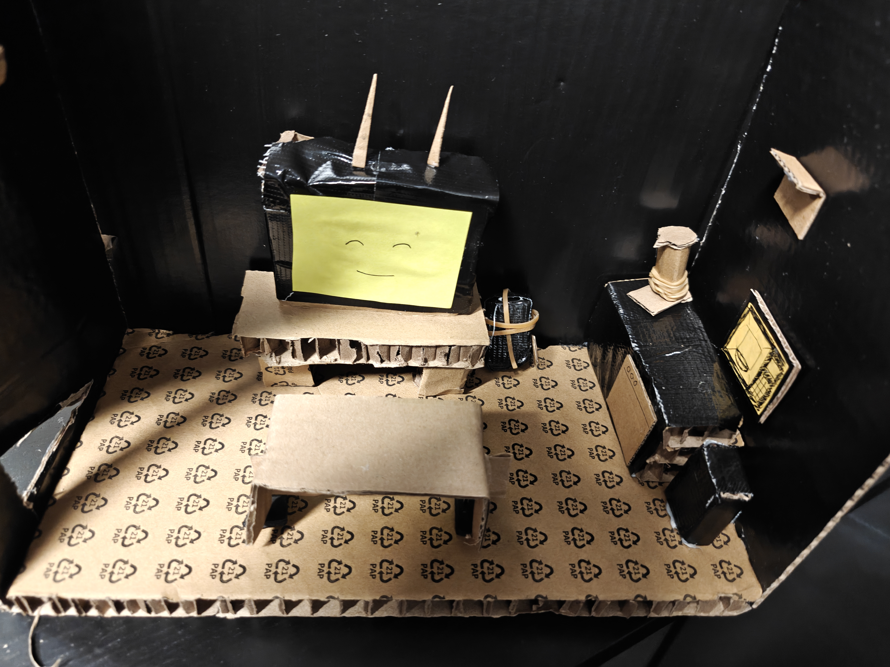
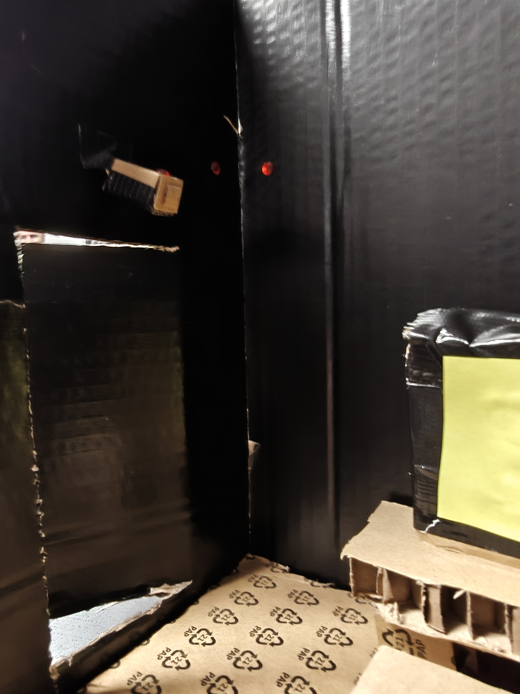
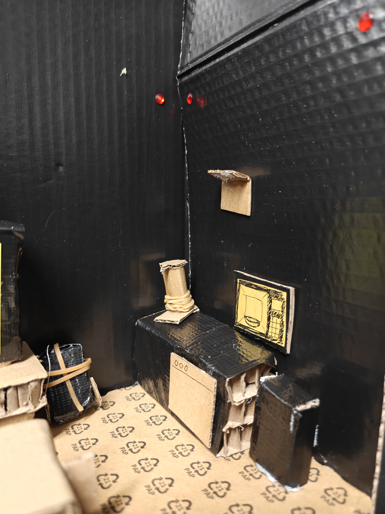
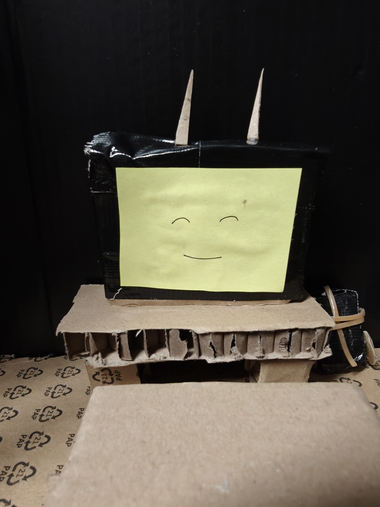
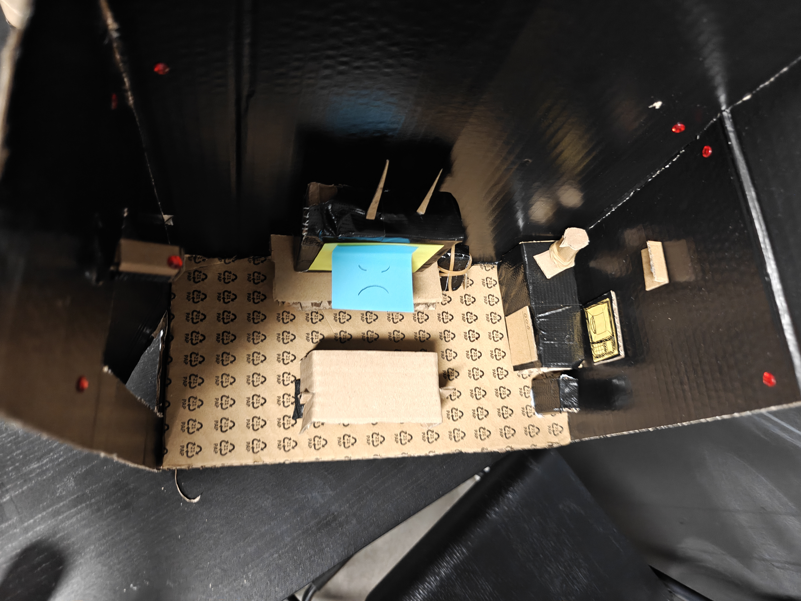
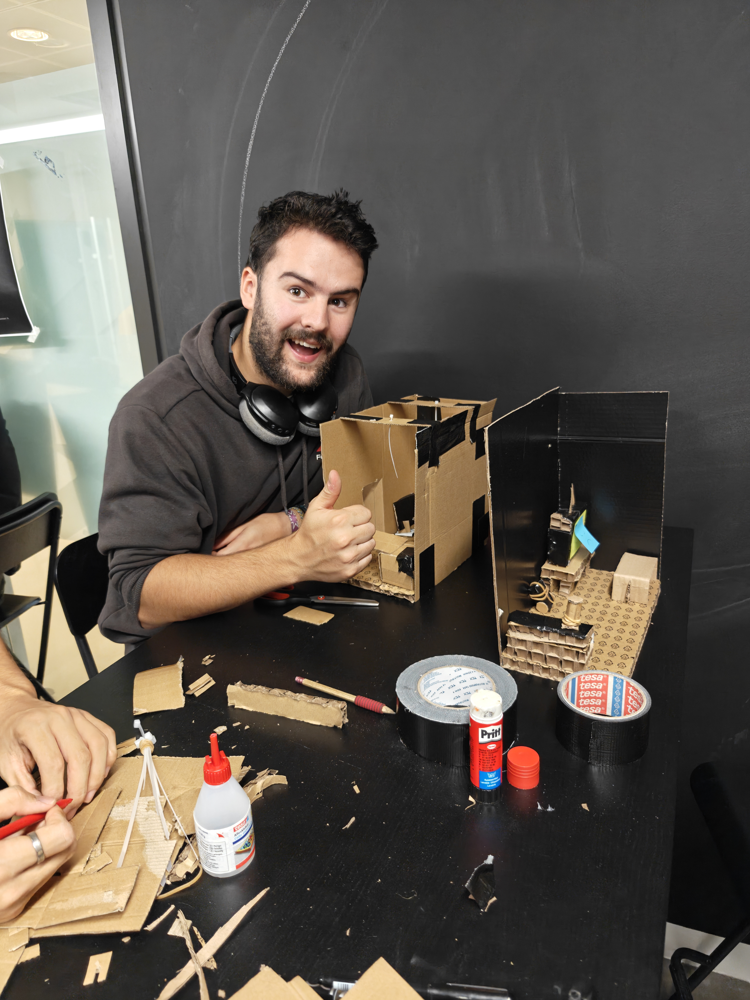

Een slimme woning die tegen je keert.
Tijdens sprint 1 hebben we de basis gelegd voor onze interactieve ervaring. Van een eerste idee tot een kartonnen prototype.
Het idee
In sprint 1 heb ik samen met het team de eerste stappen gezet voor het opzetten van het project.
We zijn begonnen met het bedenken van een idee. Vanuit de klant kregen we de opdracht om een ervaring te verzinnen die mensen aan het denken zet. Het mocht geen spel of escape room worden.
Als team besloten we daarom om er een soort spookhuisachtige ervaring van te maken. Een ervaring waarin we de gebruiker proberen aan het denken te zetten door hem of haar bang te maken in de eigen woning.
Eerste concept
Om ons idee visueel te maken, heeft iedereen uit het team een schets gemaakt van hoe we de ruimte voor ons zagen. Voor mijn concept maakte ik twee schetsen: één van de normale situatie en één van hoe de ruimte verandert zodra de ervaring begint.


In de schets is een kamer te zien met een stoel, een tv en een koffiezetapparaat als voorbeeld van smart technology. De bedoeling is dat de gebruiker gaat zitten en vervolgens merkt dat de smart-home-installatie steeds meer invloed begint uit te oefenen op de omgeving.
De tv begint bijvoorbeeld uit te leggen waarom het gedrag van de gebruiker onacceptabel is. Vervolgens wordt de kamer donkerder en wordt er een licht gericht op het koffiezetapparaat, waardoor de aandacht van de gebruiker naar dit apparaat wordt gestuurd. De installatie begint zich steeds dwingender te gedragen, waardoor de gebruiker het gevoel krijgt dat hij de controle over zijn eigen huis aan het verliezen is.
Onderzoek
Naast het bedenken van het concept heb ik ook een aantal mensen gevraagd hoe zij tegenover een sturende smart-home-installatie staan. Ik vroeg wat ze wel en niet zouden willen en welke dingen zij eng zouden vinden.
Privacy en autonomie kwamen duidelijk naar voren als belangrijke zorgen.
Vooral dataveiligheid bleek een grote zorg te zijn. Daarnaast vonden mensen het niet prettig om de autonomie in hun eigen huis te verliezen. Ze wilden niet dat algoritmes precies gingen bepalen hoe ze moesten leven.
Bij de vraag wat mensen daadwerkelijk eng zouden vinden, kwam vooral het idee naar voren dat apparaten in opstand komen. Apparaten die normaal gesproken onschuldig zijn, maar opeens een eigen wil lijken te hebben. Denk bijvoorbeeld aan Toy Story of FNAF.
Van idee naar prototype
Vervolgens zijn we als team bij elkaar gekomen en hebben we onze schetsen naast elkaar gelegd. De meeste ideeën kwamen redelijk goed met elkaar overeen. We hebben verschillende onderdelen van de schetsen bekeken en vervolgens een lijst gemaakt van alles wat nodig was.
Daarna hebben we het team in tweeën gesplitst en zijn we begonnen met het maken van een kartonnen prototype.






Een selectie van foto's van het eerste kartonnen prototype.
De ervaring
In het prototype is een kleine kamer te zien met een tv en een klein aanrechtje met bijvoorbeeld een waterkoker of koffiezetapparaat. Naast het aanrecht staat een stofzuiger of slimme vuilnisbak.
Aan de andere kant van de kamer hangt een camera die de gebruiker in de gaten houdt. Het beeld van de gebruiker willen we vervolgens op de tv laten zien. Door daarnaast veel geluiden van apparaten te gebruiken, willen we de gebruiker het gevoel geven dat de apparaten om hem heen steeds meer controle krijgen.
Apparaten
Apparaten worden zelfstandig bestuurd door de AI en reageren op een manier die de gebruiker niet verwacht.
Geluid
Geluiden van verschillende apparaten laten horen hoeveel controle de AI over de woning heeft.
Controle
Door steeds meer apparaten aan te sturen, ontstaat het gevoel dat de gebruiker de controle over zijn eigen huis verliest.
De meeste apparaten zullen uiteindelijk alleen fysiek aanwezig zijn als onderdeel van de ruimte. Hun acties en geluiden worden aangestuurd door de AI. Hierdoor hoeft de AI niet letterlijk met de gebruiker te praten. In plaats daarvan laat de AI via de apparaten zien hoeveel controle zij over de woning heeft. Juist doordat de gebruiker hoort en ziet dat apparaten zonder zijn toestemming worden bediend, ontstaat het ongemakkelijke gevoel dat zijn eigen huis niet meer van hem is.
Reflectie
Kleinere ruimte,
grotere impact.
Tijdens het ontwerpen kwamen we erachter dat ons originele idee van een ruimte van 1,5 × 3 meter veel te groot was voor wat we daadwerkelijk nodig hadden.
Daarom hebben we besloten om verder te werken met een ruimte van ongeveer 1,5 × 1,5 meter. Hierdoor wordt de installatie niet alleen praktischer om te bouwen, maar kunnen we de ervaring ook veel gerichter maken.